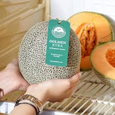
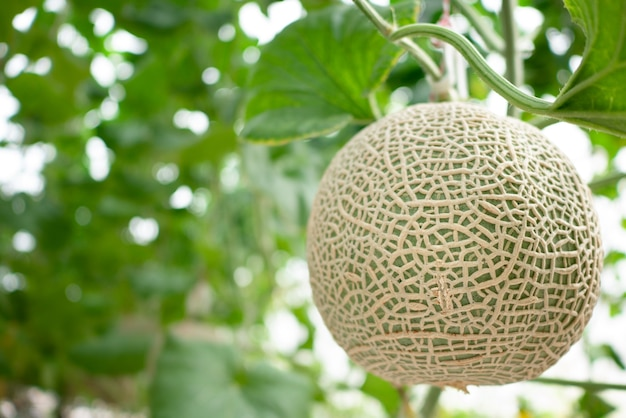
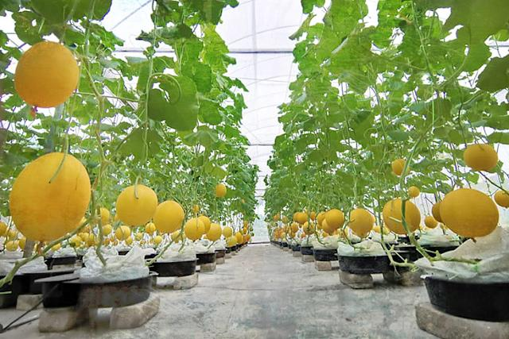

Galeri Produk



Manis alami, sehat tanpa pestisida, panen terbatas langsung dari kebun kami
Harga per kilogram melon premium hidroponik: Rp 30.000
1 buah (±1,5 kg)
3 buah (±4,5 kg)
10 buah (±15 kg)
Greenhouse berlokasi di daerah sejuk, jauh dari polusi. Kunjungi kami atau order online!